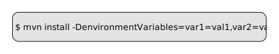
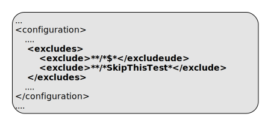
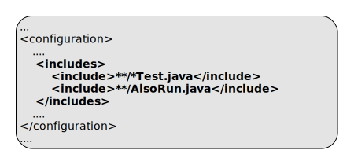
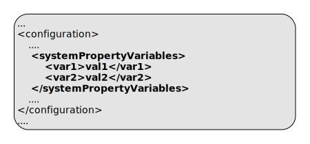

ep:test-liveview-fragment
Full name:
com.tibco.ep:ep-maven-plugin:1.6.0-SNAPSHOT:test-liveview-fragment
Description:
Test a LiveView fragment using sbunit.
A java runner for surefire is created and deployed to the test nodes - this runner invokes surefire and hence junit to run the test cases.
The java runner sets the system property net.sourceforge.cobertura.datafile to a unique file in the build directory. So when coverage is enabled, these per-node reports are merged into a single report for processing.
The java runner takes the configured reportsDirectory property and appends the node name - the node specific test report files are created in this directory. When all the test have finished, these node specific test reports are renamed into the configured reportsDirectory directory.
The maven property jenkins.executionId.reportsDirectory is set so that jenkins can locate the test reports.
Java assertions are always enabled. Options file is always ignored.
The following system properties are set :
- com.tibco.ep.dtm.fragment.version - fragment version
- com.tibco.ep.dtm.fragment.identifier - fragment identifier
Attributes:
- Requires a Maven project to be executed.
- Binds by default to the lifecycle phase: test.
Required Parameters
| Name | Type | Since | Description |
|---|---|---|---|
| <configurationDirectory> | File | 1.0.0 |
Additional resources directory for HOCON configurations This is added to the list of resource directories Example use in pom.xml:  Default value is: ${project.basedir}/src/main/configurations. |
| <liveviewDirectory> | File | 1.0.0 |
Liveview source directory Example use in pom.xml: 
Example use on commandline:  Default value is: ${project.basedir}/src/main/liveview. User property is: liveviewDirectory. |
| <testConfigurationDirectory> | File | 1.0.0 |
Additional resources directory for test HOCON configurations This is added to the list of test resource directories Example use in pom.xml:  Default value is: ${project.basedir}/src/test/configurations. |
Optional Parameters
| Name | Type | Since | Description |
|---|---|---|---|
| <additionalClasspathElements> | List | 1.0.0 |
Additional classpath elements Example use in pom.xml:  |
| <buildtype> | BaseExecuteMojo$BuldType | 1.0.0 |
Build type - DEVELOPMENT or PRODUCTION Determines build type to use when installing nodes and deploying applications. Example use in pom.xml: 
Example use on commandline:  User property is: build. |
| <clusterName> | String | 1.0.0 |
cluster name to append to the node names. Nodes are started with a service name obtained by concatenating the node names and the cluster name. For example with a node name of A plus a cluster name of test results in a service name of A.test. Example use in pom.xml:  Default value is: ${project.artifactId}. |
| <discoveryHosts> | String[] | 1.0.0 |
List of host names for the client discovery. This is used on each administration client invocation. Example use in pom.xml:  |
| <discoveryPort> | Integer | 1.0.0 |
Port number for discovery. If not set a random free port is selected and persisted to a file Example use in pom.xml: 
Example use on commandline:  User property is: discoveryPort. |
| <discoveryPortFile> | File | 1.0.0 |
Filename to be used to store generated discovery port Example use in pom.xml:  Default value is: ${project.build.directory}/discovery.port. |
| <environmentVariables> | Map | 1.0.0 |
Environment variables - these environment variables are passed through to created processes. Example use in pom.xml: 
Example use on commandline: User property is: environmentVariables. |
| <eventflowDirectories> | File[] | 1.0.0 |
Eventflow source directories If no eventflowDirectories is specified, a single directory of ${project.basedir}/src/main/eventflow is used. Example use in pom.xml: 
Example use on commandline:  User property is: eventflowDirectories. |
| <excludes> | List | 1.0.0 |
List of patterns used to specify the tests that should be excluded in testing. When not specified and when the test parameter is not specified, the default excludes will be **/*$* (which excludes all inner classes). Example use in pom.xml:  |
| <ignoreLeaks> | String[] | 1.3.0 |
List of class names to ignore in leak detection. This is processed to a CSV value to include in unit testing and in jar manifest file. Example use in pom.xml:  |
| <includes> | List | 1.0.0 |
List of patterns used to specify the tests that should be included in testing. When not specified and when the test parameter is not specified, the default includes will be **/Test*.java **/*Test.java **/*TestCase.java **/*TestSuite*.java Example use in pom.xml:  |
| <installOnly> | boolean | 1.1.0 |
Set this to 'true' to only install nodes Example use in pom.xml: 
Example use on commandline:  User property is: installOnly. |
| <javaOptions> | String[] | 1.0.0 |
Java options to pass to the execution environment Example use in pom.xml: 
Example use on commandline: 
User property is: options. |
| <nodeDirectory> | File | 1.0.0 |
Directory to install test nodes. Example use in pom.xml:  Default value is: ${project.build.directory}/test-nodes. |
| <nodeOptions> | Map | 1.0.0 |
Node options to pass to the execution environment. See the deployment tool documentation for details Example use in pom.xml: 
Example use on commandline: 
User property is: nodeOptions. |
| <password> | String | 1.0.0 |
Password Example use in pom.xml:  |
| <productHome> | File | 1.0.0 |
Product home location. This path is resolved in the following way :
Example use in pom.xml: 
Example use on commandline:  User property is: com.tibco.ep.ep-maven.product. |
| <reportsDirectory> | File | 1.0.0 |
Location of the junit reports Example use on commandline: Default value is: ${project.build.directory}/surefire-reports. |
| <serviceName> | String | 1.0.0 |
Servicename to determine which nodes to execute on. If not set, execution will be run on all the nodes in the cluster. Example use in pom.xml:  |
| <skipTests> | boolean | 1.0.0 |
Set this to 'true' to skip running tests, but still compile them. Example use in pom.xml: 
Example use on commandline:  Default value is: false. User property is: skipTests. |
| <systemPropertyVariables> | Map | 1.2.0 |
Java system properties to pass to the execution environment Example use in pom.xml:  |
| <test> | String | 1.0.0 |
Specify this parameter to run individual tests by file name, overriding the includes/excludes parameter. Each pattern you specify here will be used to create an include pattern formatted like **/${test}.java, so you can just type "-Dtest=MyTest" to run a single test called "foo/MyTest.java". Example use in pom.xml: 
Example use on commandline:  User property is: test. |
| <testMain> | String | 1.0.0 |
Test main class This main class is deployed to the whole cluster and run in the background before test cases are executed Note that javaOptions is not applied to testMain Example use on commandline:  |
| <useSystemExit> | boolean | 1.3.0 |
Set this to 'true' to have the unit test use System.exit() to terminate the test. Example use on commandline:  Default value is: false. |
| <userName> | String | 1.0.0 |
User name. If not set authentication is by platform credentials Example use in pom.xml:  |
Parameter Details
<additionalClasspathElements>
Additional classpath elements
Example use in pom.xml:
- Type: java.util.List
- Since: 1.0.0
- Required: No
<buildtype>
Build type - DEVELOPMENT or PRODUCTION
Determines build type to use when installing nodes and deploying applications.
Example use in pom.xml:
Example use on commandline:
- Type: com.tibco.ep.buildmavenplugin.BaseExecuteMojo$BuldType
- Since: 1.0.0
- Required: No
- User Property: build
<clusterName>
cluster name to append to the node names.
Nodes are started with a service name obtained by concatenating the node names and the cluster name. For example with a node name of A plus a cluster name of test results in a service name of A.test.
Example use in pom.xml:
- Type: java.lang.String
- Since: 1.0.0
- Required: No
- Default: ${project.artifactId}
<configurationDirectory>
Additional resources directory for HOCON configurations
This is added to the list of resource directories
Example use in pom.xml:
- Type: java.io.File
- Since: 1.0.0
- Required: Yes
- Default: ${project.basedir}/src/main/configurations
<discoveryHosts>
List of host names for the client discovery.
This is used on each administration client invocation.
Example use in pom.xml:
- Type: java.lang.String[]
- Since: 1.0.0
- Required: No
<discoveryPort>
Port number for discovery. If not set a random free port is selected and persisted to a file
Example use in pom.xml:
Example use on commandline:
- Type: java.lang.Integer
- Since: 1.0.0
- Required: No
- User Property: discoveryPort
<discoveryPortFile>
Filename to be used to store generated discovery port
Example use in pom.xml:
- Type: java.io.File
- Since: 1.0.0
- Required: No
- Default: ${project.build.directory}/discovery.port
<environmentVariables>
Environment variables - these environment variables are passed through to created processes.
Example use in pom.xml:
Example use on commandline:
User property is: environmentVariables.
- Type: java.util.Map
- Since: 1.0.0
- Required: No
<eventflowDirectories>
Eventflow source directories
If no eventflowDirectories is specified, a single directory of ${project.basedir}/src/main/eventflow is used.
Example use in pom.xml:
Example use on commandline:
- Type: java.io.File[]
- Since: 1.0.0
- Required: No
- User Property: eventflowDirectories
<excludes>
List of patterns used to specify the tests that should be excluded in testing.
When not specified and when the test parameter is not specified, the default excludes will be **/*$* (which excludes all inner classes).
Example use in pom.xml:
- Type: java.util.List
- Since: 1.0.0
- Required: No
<ignoreLeaks>
List of class names to ignore in leak detection. This is processed to a CSV value to include in unit testing and in jar manifest file.
Example use in pom.xml:
- Type: java.lang.String[]
- Since: 1.3.0
- Required: No
<includes>
List of patterns used to specify the tests that should be included in testing.
When not specified and when the test parameter is not specified, the default includes will be **/Test*.java **/*Test.java **/*TestCase.java **/*TestSuite*.java
Example use in pom.xml:
- Type: java.util.List
- Since: 1.0.0
- Required: No
<installOnly>
Set this to 'true' to only install nodes
Example use in pom.xml:
Example use on commandline:
- Type: boolean
- Since: 1.1.0
- Required: No
- User Property: installOnly
<javaOptions>
Java options to pass to the execution environment
Example use in pom.xml:
Example use on commandline:
User property is: options.
- Type: java.lang.String[]
- Since: 1.0.0
- Required: No
<liveviewDirectory>
Liveview source directory
Example use in pom.xml:
Example use on commandline:
- Type: java.io.File
- Since: 1.0.0
- Required: Yes
- User Property: liveviewDirectory
- Default: ${project.basedir}/src/main/liveview
<nodeDirectory>
Directory to install test nodes.
Example use in pom.xml:
- Type: java.io.File
- Since: 1.0.0
- Required: No
- Default: ${project.build.directory}/test-nodes
<nodeOptions>
Node options to pass to the execution environment. See the deployment tool documentation for details
Example use in pom.xml:
Example use on commandline:
User property is: nodeOptions.
- Type: java.util.Map
- Since: 1.0.0
- Required: No
<password>
Password
Example use in pom.xml:
- Type: java.lang.String
- Since: 1.0.0
- Required: No
<productHome>
Product home location. This path is resolved in the following way :
- If property com.tibco.ep.ep-maven.product is set, use that, else
- If environment variable TIBCO_EP_HOME is set, use that, else
- Use localrepository/../product-group/product-artifact/product-version (so default is ~/.m2/product-group/product-artifact/product-version)
Example use in pom.xml:
Example use on commandline:
- Type: java.io.File
- Since: 1.0.0
- Required: No
- User Property: com.tibco.ep.ep-maven.product
<reportsDirectory>
Location of the junit reports
Example use on commandline:
- Type: java.io.File
- Since: 1.0.0
- Required: No
- Default: ${project.build.directory}/surefire-reports
<serviceName>
Servicename to determine which nodes to execute on.
If not set, execution will be run on all the nodes in the cluster.
Example use in pom.xml:
- Type: java.lang.String
- Since: 1.0.0
- Required: No
<skipTests>
Set this to 'true' to skip running tests, but still compile them.
Example use in pom.xml:
Example use on commandline:
- Type: boolean
- Since: 1.0.0
- Required: No
- User Property: skipTests
- Default: false
<systemPropertyVariables>
Java system properties to pass to the execution environment
Example use in pom.xml:
- Type: java.util.Map
- Since: 1.2.0
- Required: No
<test>
Specify this parameter to run individual tests by file name, overriding the includes/excludes parameter.
Each pattern you specify here will be used to create an include pattern formatted like **/${test}.java, so you can just type "-Dtest=MyTest" to run a single test called "foo/MyTest.java".
Example use in pom.xml:
Example use on commandline:
- Type: java.lang.String
- Since: 1.0.0
- Required: No
- User Property: test
<testConfigurationDirectory>
Additional resources directory for test HOCON configurations
This is added to the list of test resource directories
Example use in pom.xml:
- Type: java.io.File
- Since: 1.0.0
- Required: Yes
- Default: ${project.basedir}/src/test/configurations
<testMain>
Test main class
This main class is deployed to the whole cluster and run in the background before test cases are executed
Note that javaOptions is not applied to testMain
Example use on commandline:
- Type: java.lang.String
- Since: 1.0.0
- Required: No
<useSystemExit>
Set this to 'true' to have the unit test use System.exit() to terminate the test.
Example use on commandline:
- Type: boolean
- Since: 1.3.0
- Required: No
- Default: false
<userName>
User name. If not set authentication is by platform credentials
Example use in pom.xml:
- Type: java.lang.String
- Since: 1.0.0
- Required: No